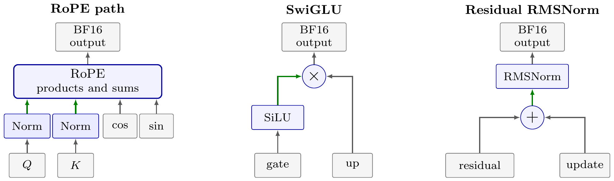
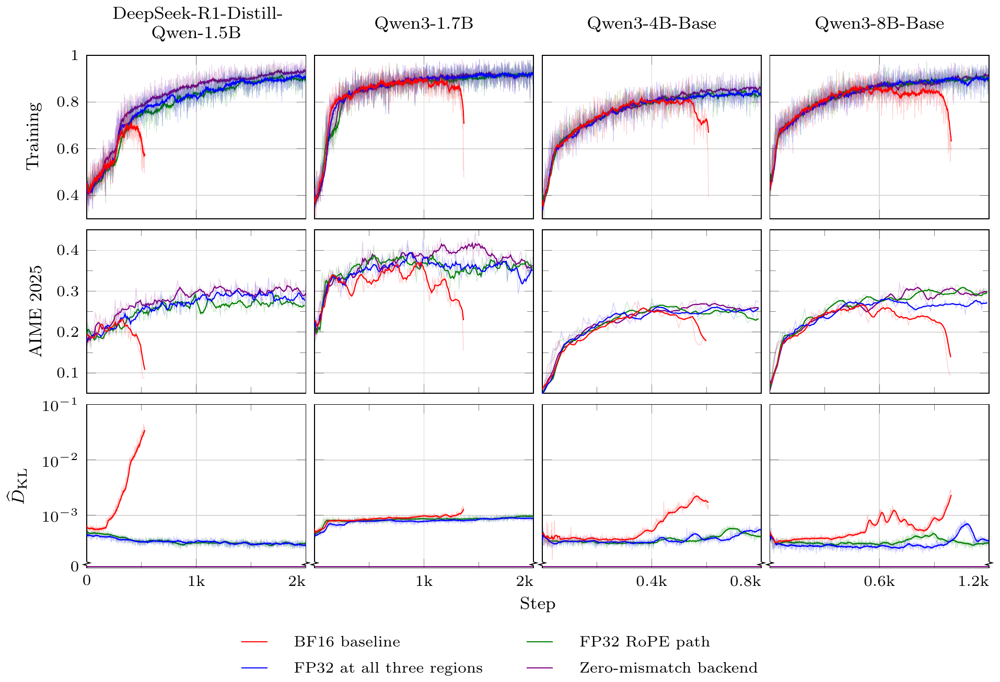

SHARE
Teams building RL training infrastructure for large models should read this. It explains a trap many have hit without knowing why: the inference engine and the training framework load the same BF16 weights, yet their token probabilities disagree, and training eventually collapses. The core idea in one sentence: you do not need bitwise agreement between the two systems; find the places where they differ in when an intermediate is rounded to BF16, and make the training side round where inference does. On four Qwen-family models this keeps every otherwise-collapsing BF16 run stable, and aligning only RoPE adds just 0.90% to 2.04% to training compute time.
What problem is it actually solving?
LLM RL usually splits into two systems: an inference engine such as vLLM generates responses, and a training framework such as Hugging Face Transformers reprocesses them, recomputes each token's probability, and updates the model. In theory both are the same policy; in practice numerical differences make their probabilities differ slightly. The intended on-policy update quietly becomes training on data from a slightly different policy, and accumulated drift can make accuracy rise and then collapse.
A simple experiment shows the issue is agreement, not precision. Each side can run compiled (graph compilation that fuses several operators into one kernel) or eager:
| Inference | Training | Outcome |
|---|---|---|
| Compiled | Compiled | Stable |
| Eager | Eager | Stable |
| Compiled | Eager | Rises then collapses |
| Eager | Compiled | Rises then collapses |
Matching modes are stable; crossed modes collapse. Keeping training eager and unchanged and switching only inference to eager restores stability. Stability depends on the two sides computing the same way, not on how high the training precision is.
What is a rounding-location mismatch?
A fused kernel can keep intermediates in FP32 until its output is rounded to BF16; separate kernels store each result in BF16, so the next operator reads an already-rounded value.
A worked example (illustrative). BF16 has 8 significant bits: adjacent representable values are 0.0078125 apart between 1 and 2, and 0.015625 apart between 2 and 4. Say the first operator yields 1.003 and the second multiplies by 3:
| Approach | Step 1 | Step 2 input | Step 2 | Final BF16 |
|---|---|---|---|---|
| Round in between (unfused) | 1.003 → 1.0 | 1.0 | 3.0 | 3.0 |
| Keep FP32 (fused) | 1.003 | 1.003 | 3.009 | 3.015625 |
Both outputs are BF16 but differ by one step. Repeated at every layer and token, this shows up as different probabilities for the same token.
The fix: align just three regions
Comparing vLLM's compiled and eager graphs for Qwen2 and Qwen3 reveals three regions where fusion moves rounding:

- RoPE path: under fusion, Q/K normalization and the rotary products and sums stay in FP32; only rotated Q/K are stored in BF16.
- SwiGLU: under fusion, SiLU stays in FP32 through the multiplication with the up projection; eager rounds SiLU first.
- Residual RMSNorm: under fusion, RMSNorm reads the unrounded residual sum; eager rounds the sum first.
The training side keeps these intermediates in FP32 and casts each region's output back to BF16. The inference engine, matmul and attention kernels, and training objective are unchanged.
How is the gap measured?
With fixed weights, vLLM generates responses; both sides compute log-probabilities, and the mean of "inference log-probability minus training log-probability" over generated tokens estimates per-token KL from inference to training. From Table 1 of the paper, in units of 10⁻⁴:
| Training-side FP32 regions | DeepSeek-R1-Distill-Qwen-1.5B | Qwen3-1.7B | Qwen3-8B-Base |
|---|---|---|---|
| None (BF16 baseline) | 6.5416 | 7.4461 | 3.7599 |
| RoPE path only | 5.0951 | 7.1912 | 3.4247 |
| All three regions | 4.8741 | 6.7689 | 3.2891 |
| Three-region reduction | 25.5% | 9.1% | 12.5% |
Aligning all three gives the smallest gap, yet only cuts it by a tenth to a quarter. Shapley attribution (averaging each change's effect over every order of adding them) gives RoPE 81.5%, 91.8%, and 76.9% of the reduction. SwiGLU's share is negative on both Qwen3 models: raising precision there alone widens the gap. "Higher precision is better" does not hold; what matters is rounding where inference rounds.
Does it actually stabilize training?

Training uses math data and clipped GRPO with no extra mismatch correction, on DeepSeek-R1-Distill-Qwen-1.5B, Qwen3-1.7B, Qwen3-4B-Base, and Qwen3-8B-Base. Default BF16 collapses on all four, with the gap rising as it does. RoPE-only or three-region alignment never collapses and keeps AIME 2025 accuracy higher. Notably, a small nonzero gap remains after alignment, yet training is stable: removing the gap at sensitive locations is enough. A repeat on DAPO-Math-17k agrees.
The overhead is small because only pointwise operations change. RoPE-only alignment adds 0.90% to 2.04% to training compute with unchanged peak memory. All three regions add 5.33% to 10.92% to forward-and-backward time, so if RoPE alone suffices there is no need for all three. Rollout generation dominates RL time, shrinking the overall share further.
Why these three locations?
Where a value falls between two adjacent BF16 values determines the direction and size of its rounding error. If many values land in similar spots, errors accumulate in one direction instead of cancelling. The authors measure how uneven these landing spots are: Fourier-transform the distribution of relative positions (0 to 1), take the root mean square of the first 16 magnitudes, and take the median over layers. A uniform distribution gives nearly 0. Projection, attention, and RMSNorm outputs score 1.5×10⁻⁵ to 8.0×10⁻⁴, nearly uniform; SiLU outputs, RoPE products, and residual sums score 0.038 to 0.472, clearly clustered. Rounding errors at these three locations are systematic, so whether to round there matters most.
Why not just compile training?
Compilation can align the sides but costs a lot: it covers forward and backward, first compilation is slow, variable response lengths trigger recompilation, and distributed sharding and custom kernels need integration. Compiled Hugging Face still is not compiled vLLM; kernels and reduction order can differ. Changing a few pointwise operations is smaller and easier to verify.
Limitations as I see them
First, one model family and two math datasets. The three regions come from Qwen2/Qwen3 graphs; other architectures need their own graph comparison.
Second, why a 10-25% gap reduction is enough is only conjectured: errors at different locations affect updates differently. On Qwen3-1.7B, RoPE-only alignment cuts the gap by just 3.4% yet still stabilizes training, and the mechanism remains unexplained.
Third, training length is limited. In Figure 3 the models train for a few hundred to just over two thousand steps; aligned curves track the zero-mismatch control, but longer runs and larger models need checking.
How a training team could try it
- Confirm the problem: log the inference-minus-training log-probability gap on the same tokens and see whether it rises before collapse.
- Change only RoPE: compute Q/K normalization and RoPE products in FP32 on the training side and cast the output to BF16. It costs about one or two percent.
- If still unstable, diff the inference and training graphs for other fusion-moved rounding locations, align them one by one, and confirm each shrinks the KL estimate.
- Redo the graph comparison after changing the inference engine version or compilation settings, since fusion changes move rounding locations.
Verdict
The key lesson: when training and inference disagree, first find where each side rounds, rather than just raising precision.
| Dimension | Assessment |
|---|---|
| Problem importance | High. Split inference and training is standard in RL post-training, and collapses are expensive |
| Novelty | Medium. Rounding-location matching appeared in bitwise-agreement work; the contribution is showing a few locations suffice for stability |
| Evidence | Medium. Four models, static attribution plus training curves, a second dataset, but one model family |
| Engineering cost | Low. A few pointwise changes on the training side; inference and main kernels untouched |
| Worth trying | Yes, for BF16 RL with vLLM plus Hugging Face that has seen collapses: start with RoPE |
Discussion
Add experiment details, reproduction notes or a different take. Requires a GitHub sign-in.
Loading the discussion…